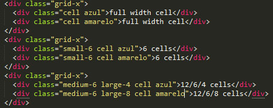
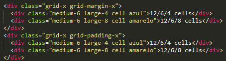
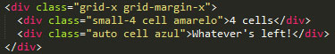
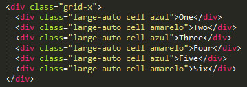
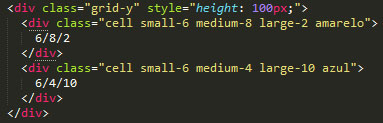

Um novo sistema de Grid que foi reformulado na v6.4 que possui varios tipos de grid, que incluem margem de grade, grade de preenchimento, grade de quadro, grade de bloco e grade vertical.
A Grid XY funciona de forma muito semelhante à grid flutuante padrão, mas inclui uma série de recursos úteis apenas possíveis com Flexbox, como alinhamento horizontal e vertical, dimensionamento automático e uma grid vertical completa.
A característica definidora da grid XY é a capacidade de usar margin e padding em harmonia. Para definir esse tipo de grid, basta configurar .grid-margin-x ou .grid-padding-x na class.
Para ter uma grid que tenha seu tamanho automático, coloque a class .auto
A Grid vai se ajustar na tela pela quantidade de grid que você colocou.Para usar é dizer o tamanho da grid e colocar auto exemplo large-auto
A grid XY também suporta grid verticais. Basta aplicar .grid-y em vez de .grid-x. As células internas mudarão automaticamente para proporcionar espaçamento verticalmente em vez de horizontalmente.
